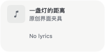

读正在唱的这一句
当前歌词居中突出，前后文安静地退后。长句会腾出阅读空间，不挤成一行。
 LyricTile
LyricTile
音乐继续，手上的事情也继续。
正在唱的那一句，轻轻留在桌面一侧。
为 Apple silicon Mac 而造 · macOS 27+
独立运行，无需安装 Nearpane。
不用一直打开播放器。歌词、音乐信息和控制，出现在需要它们的地方。
当前歌词居中突出，前后文安静地退后。长句会腾出阅读空间，不挤成一行。
悬停展开封面、曲名、播放控制和进度。操作结束，回到歌词。

没有歌词时收为音乐摘要。停止播放后自动消失，把位置还给桌面。
正式版准备中
最新候选正在完成发行核验。正式安装包就绪后，这里会提供同一版本的下载与校验文件。
云端候选供工程核验，下载可能需要 GitHub 登录。旧 build 4 不作为最新版下载。